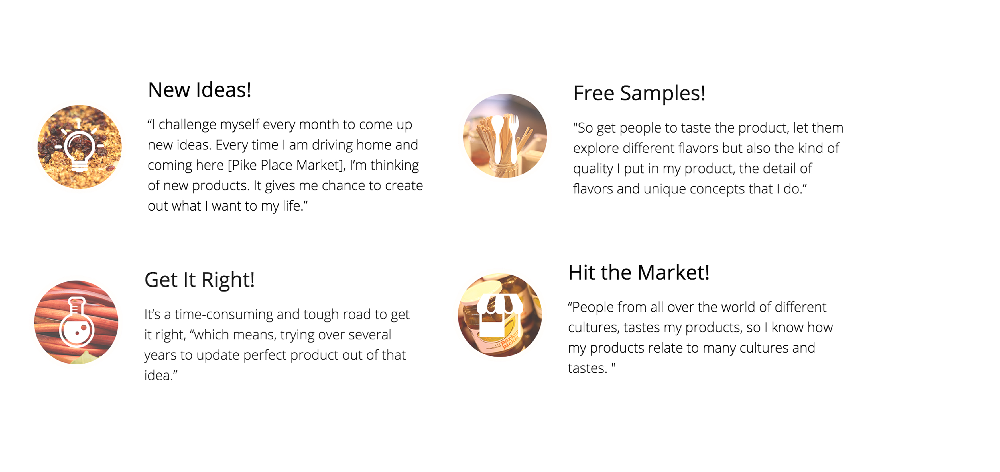
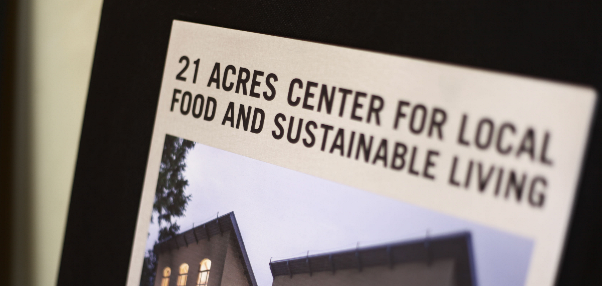
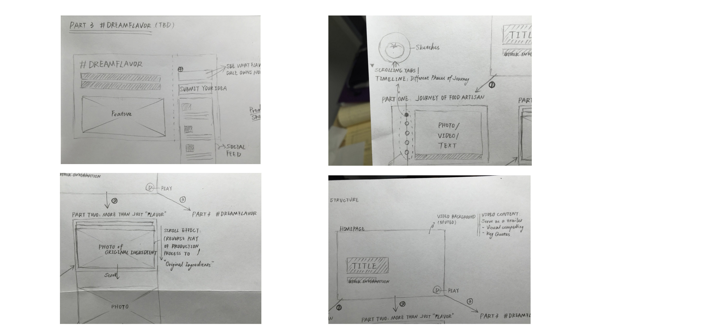
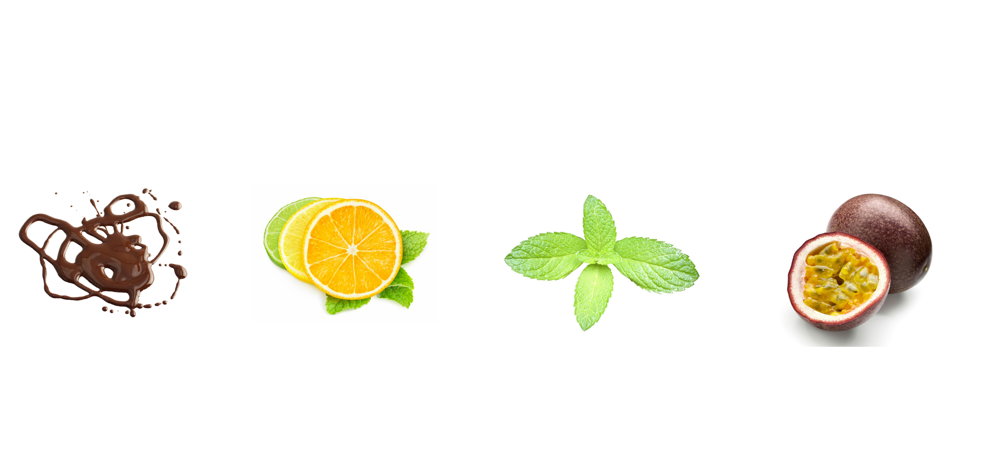

The journey of flavors
Web Design | Immersive Storytelling
The journey of flavors is an immersive storytelling project that I finished in March. In this project, I mapped out various aspects of Dale Nelson’s story with his business - local specialty foods.

Research on Dale
Before started developing the website, we did research and conducted interviews on Dale and asked for his insights on the website, in order to consolidate our ideas of design goals.
Through research, we found that Dale wants to highlight his innovative vision of artfully creating food rather than cooking food based on recipes. In addition, he also wants to show his desire to collect inspiration and ideas from his customers and then test if they could be potential recipes for his products.
Design Goal
By doing research, we found out two design goals for Dale’s website.
[1] To have a better understanding of Dale and his insights on the creation of food.
[2] To allow customers to be able to interact and communicate with Dale and share opinions.
Design Solution
To achieve goals, we came up with several feasible solutions to exaggerate his ideas, visions, and stories. Then we showed them to Dale, and finalize our ideas of how to present.
[1] How do new products get rolled out?
New Idea → Experiment → Test → Modify

According to our previous talk, Dale has his own ways of rolling out new products. He usually tries his new ideas out in his kitchen first and bring them to the market as samplers in order to collect feedbacks for his customers. After that, he changes ingredients, tries new ways of cooking for better tastes. And finally he improves the quality and brings his new products to market for sale.
[2] What’s the story behind his 21 Acres?
Dale would like to help local farmers to be more knowledgeable with farming and food. In addition, his vision behind 21 Acres invovles with sustainable life.

[3] The obstacles of his business
We also talked about the obstacles that he met in every phase of his business. How many things were changed because of his business? What's his takeaway?
[4] Collecting insights on new recipes on Twitter & Interact with his customers online
Since Dale already has an active Twitter account and communicates frequently with his old friends around his products, we suggested him to be more active. We recommended him to interact with his customers online and collect new ideas from them rather than thinking of new recipes on his own.
Paper Sketch
Based off of what we had so far, we paper prototyped the website including various types of content to show.

Final Developing
Making it story-ish?
Since we have already consolidate the ideas of what to present, we asked Dale to name each section by choosing a kind of ingredients which share the same feeling/taste to him.
Adding some fun?
Based on what we have so far, we decided to add some fun to the website. We shot some interesting photos while we were doing research, so it is time to use them.
Dancing around Adobe Muse.
We used Adobe Muse to have animations and effects for our website. Let's go and check it out!